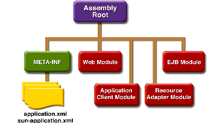

www.netbeans.org
Feedback
java.sun.com
|
Download
www.netbeans.org |
|
API
Feedback java.sun.com |
Packaging Applications
A J2EE application is delivered in an Enterprise Archive (EAR) file, a standard Java Archive (JAR) file with an
.earextension. Using EAR files and modules makes it possible to assemble a number of different J2EE applications using some of the same components. No extra coding is needed; it is only a matter of assembling (or packaging) various J2EE modules into J2EE EAR files.An EAR file (see Figure 1-6) contains J2EE modules and deployment descriptors. A deployment descriptor is an XML document with an
.xmlextension that describes the deployment settings of an application, a module, or a component. Because deployment descriptor information is declarative, it can be changed without the need to modify the source code. At runtime, the J2EE server reads the deployment descriptor and acts upon the application, module, or component accordingly.There are two types of deployment descriptors: J2EE and runtime. A J2EE deployment descriptor is defined by a J2EE specification and can be used to configure deployment settings on any J2EE-compliant implementation. A runtime deployment descriptor is used to configure J2EE implementation-specific parameters. For example, the Sun Java System Application Server Platform Edition 8 runtime deployment descriptor contains information such as the context root of a web application, the mapping of portable names of an application's resources to the server's resources, and Application Server implementation-specific parameters, such as caching directives. The Application Server runtime deployment descriptors are named
sun-moduleType.xmland are located in the same directory as the J2EE deployment descriptor.

A J2EE module consists of one or more J2EE components for the same container type and one component deployment descriptor of that type. An enterprise bean module deployment descriptor, for example, declares transaction attributes and security authorizations for an enterprise bean. A J2EE module without an application deployment descriptor can be deployed as a stand-alone module. The four types of J2EE modules are as follows:
- EJB modules, which contain class files for enterprise beans and an EJB deployment descriptor. EJB modules are packaged as JAR files with a
.jarextension.- Web modules, which contain servlet class files, JSP files, supporting class files, GIF and HTML files, and a web application deployment descriptor. Web modules are packaged as JAR files with a
.war(web archive) extension.- Application client modules, which contain class files and an application client deployment descriptor. Application client modules are packaged as JAR files with a
.jarextension.- Resource adapter modules, which contain all Java interfaces, classes, native libraries, and other documentation, along with the resource adapter deployment descriptor. Together, these implement the Connector architecture (see J2EE Connector Architecture) for a particular EIS. Resource adapter modules are packaged as JAR files with an
.rar(resource adapter archive) extension.
|
Download
www.netbeans.org |
|
API
Feedback java.sun.com |
All of the material in The J2EE(TM) 1.4 Tutorial is copyright-protected and may not be published in other works without express written permission from Sun Microsystems.